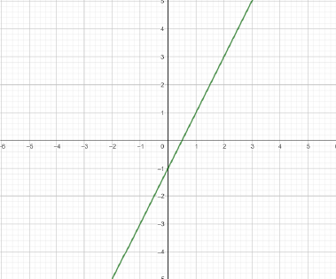
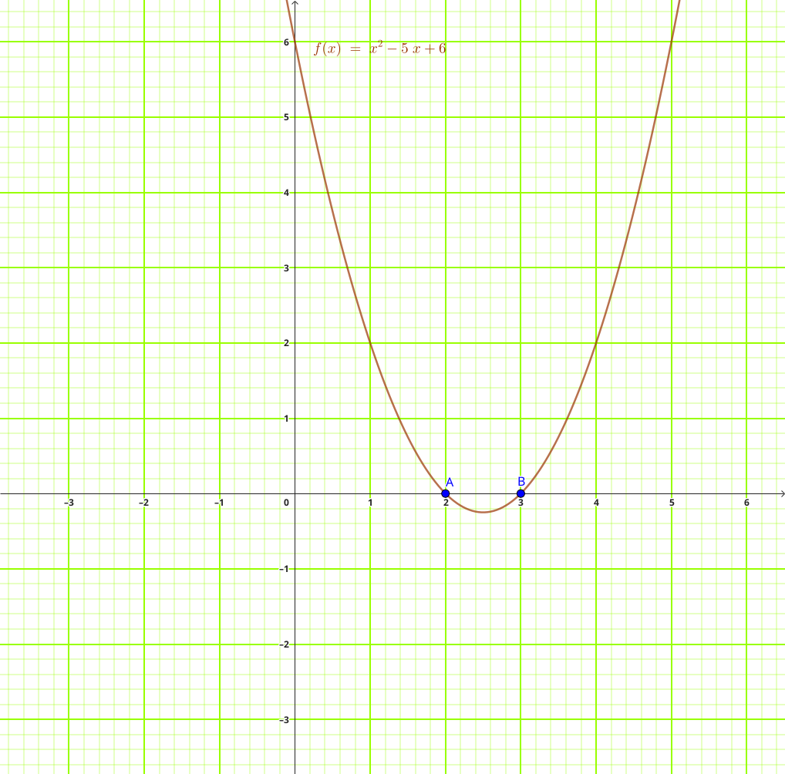
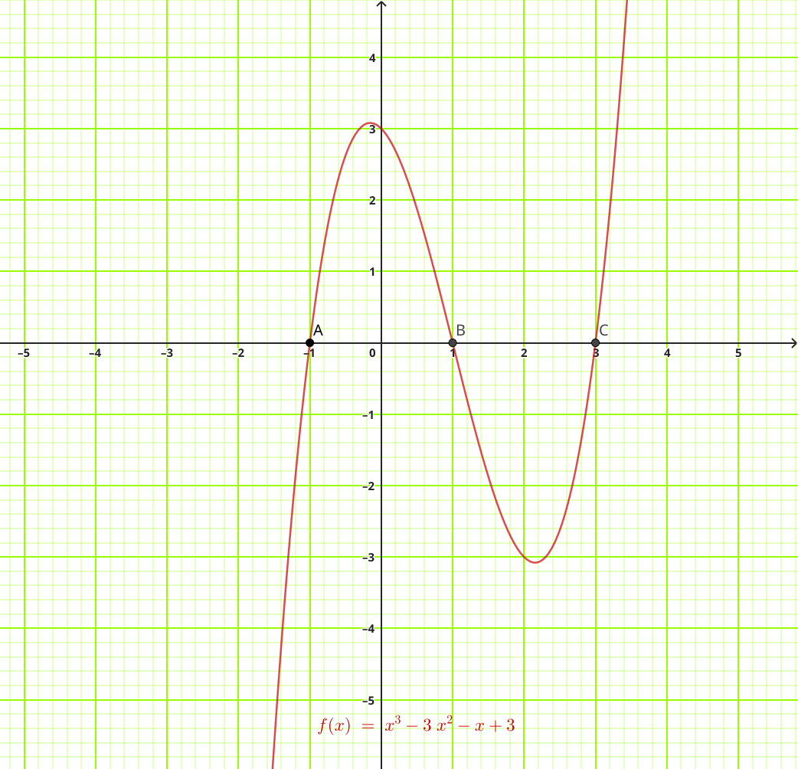
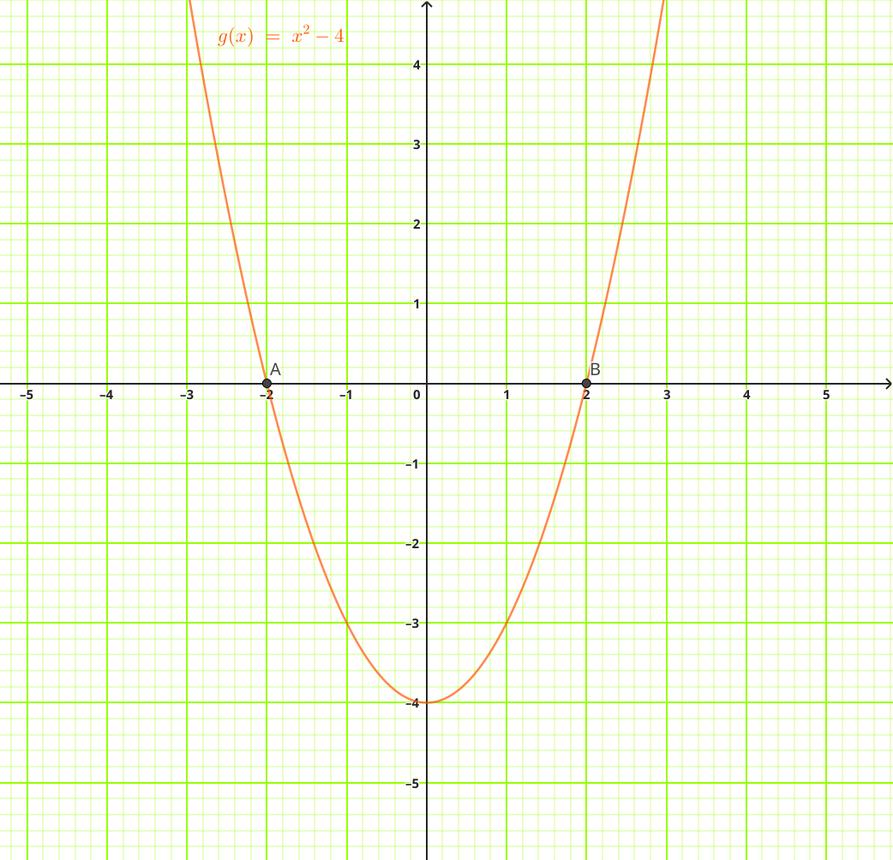

Definition and Types
A polynomial function is an algebraic expression consisting of variables and coefficients, involving only addition, subtraction, multiplication, and non-negative integer exponents.
General form of a polynomial:
\[ P(x) = a_nx^n + a_{n-1}x^{n-1} + \cdots + a_1x + a_0 \]Where \( a_n \neq 0 \) and \( n \) is a non-negative integer.
Degree of Polynomial:
The highest power of the variable (n) determines the degree:
- Constant: Degree 0 (e.g., \( P(x) = 5 \))
- Linear: Degree 1 (e.g., \( P(x) = 2x + 3 \))
- Quadratic: Degree 2 (e.g., \( P(x) = x^2 - 5x + 6 \))
- Cubic: Degree 3 (e.g., \( P(x) = x^3 + 2x^2 - x + 5 \))
Leading Coefficient:
- The leading coefficient of a polynomial is the term with the highest degree (\( a_n \)).
- The leading coefficient cannot be zero (\( a_n \ne 0 \))
Linear Polynomials
Linear Polynomials are first-degree polynomials of the form below:
\[ f(x) = ax + b \quad (a \neq 0) \]Characteristics of linear Polynomials:
- Straight line graphs
- One real root (x-intercept)
- Constant slope (gradient)
Graph of \( f(x) = 2x - 1 \) with the root at \( x = 0.5 \)

Quadratic Polynomials
Second-degree polynomials are of the form:
\[ f(x) = ax^2 + bx + c \quad (a \neq 0) \]Graph Characteristics:
- Parabolic shape
- Vertex (turning point)
- Axis of symmetry
- 0, 1, or 2 real roots
Graph of \( f(x) = x^2 -5x + 6 \) with the root at \( x = 2 \) and \( x = 3 \)

Cubic Functions
Third-degree polynomials of the form:
\[ f(x) = ax^3 + bx^2 + cx + d \quad (a \neq 0) \]Example cubic function:
\[ f(x) = x^3 - 3x^2 - x + 3 \]Graph Characteristics:
- "S"-shaped curve
- 1 to 3 real roots
- Possible 1 or 2 turning points
Graph of \( f(x) = x^3 - 3x^2 - x + 3 \) with the roots at \( x = -1 \), \( x = 1 \) and \( x = 3 \)

Practice Exercise
Question 1
Which of the following is a polynomial function?
- \( f(x) = 3x^2 - 5x + 7 \)
- \( f(x) = \frac{2}{x} + 1 \)
- \( f(x) = \sqrt{x} + 4 \)
- \( f(x) = x^{-2} + 3x \)
Answer: A
\( f(x) = 3x^2 - 5x + 7 \) is a polynomial because its variable has only non-negative integer exponents.
The other expressions contain a negative exponent, a variable in the denominator, or a fractional exponent.
Question 2
Consider the polynomial \[ P(x) = 4x^5 - 3x^3 + 7x^2 - 2x + 9. \] State:
- the degree of the polynomial;
- the leading coefficient;
- the constant term.
The polynomial is \[ P(x) = 4x^5 - 3x^3 + 7x^2 - 2x + 9. \]
(a) Degree: \(5\), because the highest power of \(x\) is \(5\).
(b) Leading coefficient: \(4\), because \(4x^5\) is the term with the highest degree.
(c) Constant term: \(9\).
Question 3
Classify each of the following polynomial functions as constant, linear, quadratic, or cubic.
- \( f(x) = 8 \)
- \( g(x) = 5x - 2 \)
- \( h(x) = 2x^2 + 3x - 1 \)
- \( p(x) = x^3 - 4x + 6 \)
(a) \( f(x) = 8 \) — Constant polynomial (degree \(0\)).
(b) \( g(x) = 5x - 2 \) — Linear polynomial (degree \(1\)).
(c) \( h(x) = 2x^2 + 3x - 1 \) — Quadratic polynomial (degree \(2\)).
(d) \( p(x) = x^3 - 4x + 6 \) — Cubic polynomial (degree \(3\)).
Question 4
Consider the polynomial \[ f(x) = -2x^3 + 5x^2 - 7x + 4. \] Which statement about the polynomial is correct?
- It is a quadratic polynomial with leading coefficient \(5\).
- It is a cubic polynomial with leading coefficient \(-2\).
- It is a cubic polynomial with leading coefficient \(4\).
- It is a linear polynomial with leading coefficient \(-2\).
Answer: B
The highest power of \(x\) is \(3\), so the polynomial is cubic.
The term containing the highest power is \(-2x^3\), so the leading coefficient is \(-2\).
Question 5
Match each polynomial type with its correct graph characteristic.
- Linear polynomial
- Quadratic polynomial
- Cubic polynomial
Characteristics:
- Parabolic shape with a possible turning point
- S-shaped curve with up to two turning points
- Straight-line graph with constant gradient
Answers:
(a) Linear polynomial → (iii)
A linear polynomial has a straight-line graph with constant gradient.
(b) Quadratic polynomial → (i)
A quadratic polynomial has a parabolic graph and may have a turning point.
(c) Cubic polynomial → (ii)
A cubic polynomial generally has an S-shaped graph and may have
one or two turning points.
Ready for more challenges?
Full Practice SetRoots and Zeros
Roots and Zeros
A root (or zero) of a polynomial, $p(x)$, is a solution to \( p(x) = 0 \).
For \( p(x) = x^2 - 4 \):
\( \begin{aligned} & \Rightarrow p(x) &= 0 \\ & \Rightarrow x^2 - 4 &= 0 \\ & \Rightarrow (x - 2)(x + 2) &= 0 \end{aligned} \)
if $ x - 2 = 0$
$\Rightarrow x = 2$
if $ x + 2 = 0$
$\Rightarrow x = -2$
Thus, \( x = -2 \) and \( x = 2 \) are roots or zeros of the polynomial.

Fundamental Theorem of Algebra:
A polynomial of degree \( n \) has exactly \( n \) roots (real or complex, counting multiplicities).
Practice Exercise
Question 1
Find the zeros of the polynomial $f(x) = 2x^2 + 3x - 2$.
Question 2
Find the roots of the polynomial $g(x) = x^2 - 5x + 6$.
Question 3
Solve for the zeros of $h(x) = x^2 - 9$.
Question 4
Determine the x-intercepts of the polynomial $p(x) = x^2 + 2x - 8$.
Question 5
Find all roots of $q(x) = x^2 - 7x + 12$.
Ready for more challenges?
Full Practice SetAddition & Subtraction
Addition and Subtraction
Combine like terms (terms with the same degree):
Example:
\[ (3x^2 + 2x - 5) + (2x^2 - 4x + 1) = 5x^2 - 2x - 4 \]Practice Exercise
Question 1
Given $h(x) = x^4 + 2x^3 - x^2 + 4x - 7$ and $g(x) = 2x^3 + 3x^2 - 5x - 5$, find $h(x) + 2g(x)$.
Question 2
Given $h(x) = x^4 + 2x^3 - x^2 + 4x - 7$ and $g(x) = 2x^3 + 3x^2 - 5x - 5$, find $h(x) - 2g(x)$.
Question 3
Given $h(x) = x^4 + 2x^3 - x^2 + 4x - 7$ and $g(x) = 2x^3 + 3x^2 - 5x - 5$, find $3h(x) - 2g(x)$.
Question 4
Given $h(x) = x^4 + 2x^3 - x^2 + 4x - 7$ and $g(x) = 2x^3 + 3x^2 - 5x - 5$, find $g(x) - h(x)$.
Question 5
Given $h(x) = x^4 + 2x^3 - x^2 + 4x - 7$ and $g(x) = 2x^3 + 3x^2 - 5x - 5$, find $2h(x) - 2g(x)$.
Ready for more challenges?
Full Practice SetMultiplication
Multiplication
Use the distributive property (FOIL method for binomials):
Example:
\[ (x + 2)(x - 3) = x^2 - 3x + 2x - 6 = x^2 - x - 6 \]Practice Exercise
Question 1
Multiply and simplify: \( (x + 2)(x^2 - 3x + 4) \).
Question 2
Multiply and simplify: \( (x - 3)(x^2 + 2x + 5) \).
Expand:
\( x(x^2 + 2x + 5) - 3(x^2 + 2x + 5) = x^3 + 2x^2 + 5x - 3x^2 - 6x - 15 \)
Simplify:
\( x^3 - x^2 - x - 15 \)
Question 3
Multiply and simplify: \( (2x + 1)(x^2 - x + 4) \).
Expand:
\( 2x(x^2 - x + 4) + 1(x^2 - x + 4) = 2x^3 - 2x^2 + 8x + x^2 - x + 4 \)
Simplify:
\( 2x^3 - x^2 + 7x + 4 \)
Question 4
Multiply and simplify: \( (x^2 + 3x - 2)(x + 4) \).
Expand:
\( x^2(x + 4) + 3x(x + 4) - 2(x + 4) = x^3 + 4x^2 + 3x^2 + 12x - 2x - 8 \)
Simplify:
\( x^3 + 7x^2 + 10x - 8 \)
Question 5
Multiply and simplify: \( (3x - 2)(2x^2 + x - 5) \).
Expand:
\( 3x(2x^2 + x - 5) - 2(2x^2 + x - 5) = 6x^3 + 3x^2 - 15x - 4x^2 - 2x + 10 \)
Simplify:
\( 6x^3 - x^2 - 17x + 10 \)
Ready for more challenges?
Full Practice SetDivision of Polynomials
Division of Polynomials
Polynomial long division follows similar steps to numerical division:
Divide \( x^3 - 2x^2 - 4x + 8 \) by \( x - 2 \):
1. Divide leading terms: \( x^3 ÷ x = x^2 \)
2. Multiply divisor by \( x^2 \): \( x^3 - 2x^2 \)
3. Subtract and bring down next term
4. Repeat process until remainder is of lower degree than divisor
Result: \( x^2 - 4 \) with remainder 0
Practice Exercise
Question 1
Divide \( 2x^3 + 3x^2 - 5x + 6 \) by \( x + 2 \).
Watch the video below for a clearer understanding of the question.
Question 2
Divide \( x^3 - 6x^2 + 11x - 6 \) by \( x - 1 \).
Watch the video below for a clearer understanding of the question.
Question 3
Divide \( x^3 + 2x^2 - x - 2 \) by \( x + 1 \).
Watch the video below for a clearer understanding of the question.
Question 4
$\dfrac{x^4 - 3x^3 - 3}{x^3 - x^2}$
Watch the video below for a clearer understanding of the question.
Question 5
Divide \( 2x^4 + 3x^3 - x^2 + 5x - 6 \) by \( x^2 + x - 2 \).
Watch the video below for a clearer understanding of the question.
Ready for more challenges?
Full Practice SetRemainder Theorem
If a polynomial \( P(x) \) is divided by \( (x - a) \), the remainder is \( P(a) \).
Given \( P(x) = x^3 - 2x^2 + 3x - 5 \), find remainder when divided by \( x - 1 \):
\[ P(1) = (1)^3 - 2(1)^2 + 3(1) - 5 = -3 \]Thus, remainder is -3.
Application:
Quickly evaluate remainders without performing full division.
Proof of Remainder Theorem
From polynomial division:
\[ P(x) = (x - a)Q(x) + R \]Where \( Q(x) \) is the quotient and \( R \) is the remainder (constant).
Substitute \( x = a \):
\[ P(a) = (a - a)Q(a) + R = R \]Practice Problem
Find the remainder when \( P(x) = 2x^3 - 5x^2 + 4x - 1 \) is divided by \( x + 2 \).
Using Remainder Theorem with \( x = -2 \):
\[ P(-2) = 2(-2)^3 - 5(-2)^2 + 4(-2) - 1 \] \[ = -16 - 20 - 8 - 1 = -45 \]Practice Exercise
Question 1
Ready for more challenges?
Full Practice SetFactor Theorem
For a polynomial \( P(x) \), \( (x - a) \) is a factor if and only if \( P(a) = 0 \).
Show \( x - 2 \) is a factor of \( P(x) = x^3 - 3x^2 + 4 \):
\[ P(2) = 8 - 12 + 4 = 0 \]Thus, \( x - 2 \) is a factor.
Application:
Factorizing polynomials and finding roots.
Using Factor Theorem
Steps to factorize a polynomial:
- Find possible roots using Rational Root Theorem (factors of constant term ÷ factors of leading coefficient)
- Test possible roots using Factor Theorem
- Once a root \( a \) is found, factor out \( (x - a) \) using synthetic division
- Repeat with the resulting polynomial until fully factorized
Factorize \( P(x) = x^3 - 3x^2 - x + 3 \):
Possible roots: ±1, ±3
Test \( x = 1 \): \( P(1) = 1 - 3 - 1 + 3 = 0 \) → \( (x - 1) \) is a factor
Using synthetic division:
Quotient: \( x^2 - 2x - 3 \)
Final factorization: \( (x - 1)(x + 1)(x - 3) \)
Relationship Between Theorems
The Factor Theorem is a special case of the Remainder Theorem where the remainder is zero.
\[ P(a) = 0 \iff (x - a) \text{ is a factor of } P(x) \]Practice Problem
Show that \( x + 1 \) is a factor of \( P(x) = 2x^3 + x^2 - 5x + 2 \) and hence factorize completely.
1. Test \( P(-1) = 2(-1)^3 + (-1)^2 - 5(-1) + 2 = -2 + 1 + 5 + 2 = 6 \neq 0 \)
Wait, this suggests \( x + 1 \) is NOT a factor. Let's try another approach.
Testing \( x = 1 \): \( P(1) = 2 + 1 - 5 + 2 = 0 \) → \( x - 1 \) is a factor
Using synthetic division:
Quotient: \( 2x^2 + 3x - 2 \)
Further factorized: \( (x - 1)(2x - 1)(x + 2) \)
Practice Exercise
Question 1
Find the remainder when \( P(x) = x^4 - 2x^3 + 3x - 5 \) is divided by \( x - 2 \).
Question 2
Show that \( x - 3 \) is a factor of \( P(x) = x^3 - 6x^2 + 11x - 6 \) and factorize completely.
\( P(3) = 27 - 54 + 33 - 6 = 0 \)
Synthetic division gives \( x^2 - 3x + 2 \)
Complete factorization: \( (x - 1)(x - 2)(x - 3) \)
Question 3
Given that \( x - 2 \) and \( x + 1 \) are factors of \( P(x) = x^4 + ax^3 + bx^2 - 4x - 4 \), find the values of \( a \) and \( b \).
Using \( P(2) = 0 \): \( 16 + 8a + 4b - 8 - 4 = 0 \) → \( 8a + 4b = -4 \)
Using \( P(-1) = 0 \): \( 1 - a + b + 4 - 4 = 0 \) → \( -a + b = -1 \)
Solving simultaneously: \( a = 0 \), \( b = -1 \)
Ready for more challenges?
Full Practice SetQuick Test
This section contains 100 multiple choice questions. You have 60 minutes to complete it.
Each question has four options labeled A to D. Select the correct answer for each question.